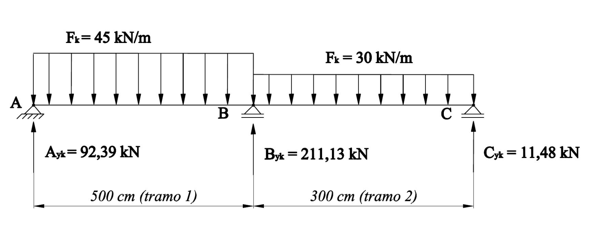
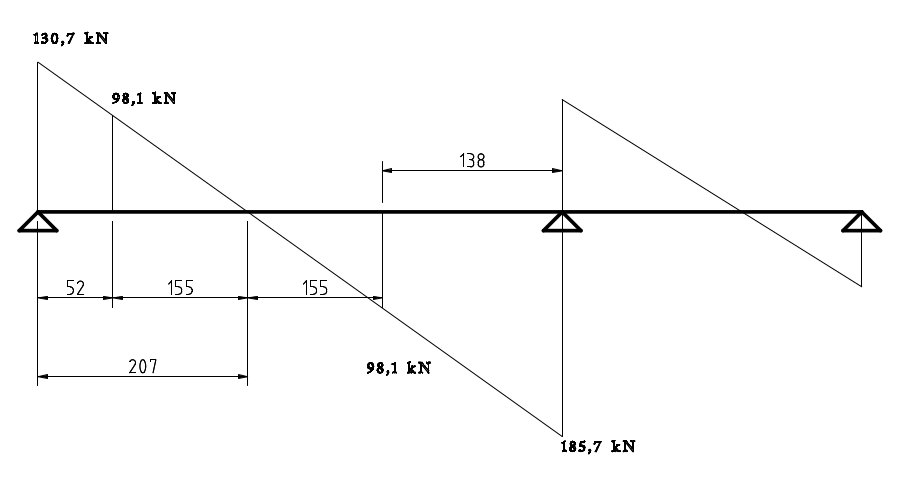
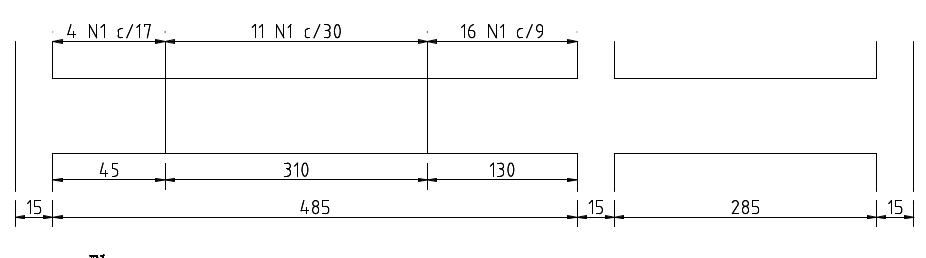
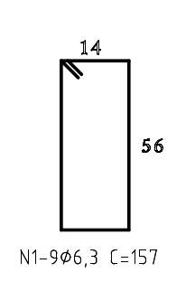

Viga submetida a esforço de cisalhamento
Neste tópico será apresentado um exemplo completo de dimensionamento
Exemplo
Considere o esquema estático mostrado na figura e os seguintes dados:
\(h = 60\) cm
\(b_w =18\) cm
\(d = 45 \) cm
$\gamma_c = \gamma_f$ = 1,4;
$\gamma_s$ = 1,15;
Concreto C20, aço CA-50;
Brita 1 ($d_{max} = $19 mm);
$c_{nom} = $ 2,0 cm;

Esquema esttático da viga
Solução para o tramo 1
Força cortante de cálculo
O primeiro passo é construir o diagrama de força cortante e determinar o valor da força cortante máxima. Para a viga do problema:
\[V_{k,A} = 93{,}39 \text{ kN}\] \[ V_{sd, A} = \gamma_f V_k = 130{,}7 \text{ kN} \]
\[V_{k,B} = 132{,}6 \text{ kN}\] \[ V_{sd, B} = \gamma_f V_k = 185{,}7 \text{ kN} \]
Esmagamento das bielas de compressão
Primeiramente é necessário satisfazer a condição de esmagamento das bielas de compressão:
\[ V_{sd} \le V_{Rd2} \]e
\[ V_{Rd2} = 0{,}27 \Bigg( 1 - \frac{f_{ck}}{250} \Bigg) f_{cd} \cdot b_w \cdot d \]Considerando a altura útil de 54 cm, tem-se:
\[ V_{rd2} = 0{,}27 \Bigg( 1- \frac{20}{250} \Bigg) \frac{2{,}0}{1{,}4} \cdot 18 \cdot 54 = 344{,}9 \text{ KN} \]Portanto, a condição acima é satisfeita, não ocorrendo o esmagamento das bielas. Logo, podemos prosseguir com os cálculos.
Cálculo da armadura mínima
A armadura mínima na condição do estribos a 90° é:
\[A_{sw,mín} = \frac{20 f_{ctm}}{f_{ywk}} b_w \] \[f_{ctm} = 0{,}3 f_{ck}^{2/3} = 2{,}21 \text{ MPa}\] \[A_{sw,mín} = \frac{20 \cdot 0{,}221}{50}\cdot 18 = 1{,}59 \text{ cm²} \]Força cortante para a armadura mínima
Para o exemplo de uma viga, a força cortante é uma função linear decrescente. Isso significa que diminui até zero e depois volta a aumentar com sinal invertido. Existe um intervalo de comprimento da viga em que podemos utilizar apenas a armadura mínima. A localização pode ser obtida por meio do valor da força cortante mínima.
A força cortante mínima pode ser calculada por:
\[V_{sd,mín} = 0{,}0137 b_w \cdot d \cdot f_{ck}^{2/3} = 0{,}0137 \cdot 18 \cdot 54 \cdot 20^{2/3} = 98{,}1 \text{ kN} \]Como \(V_{sd} > V_{sd,mín}\) é necessário calcular a armadura de cisalhamento.
Cálculo da armadura de cisalhamento
\[V_{sd} = V_c - V_{sw}\]Na flexão simples
\[V_c = V_{c0} = 0{,}6 f_{ctd} \cdot b_w \cdot d \] \[f_{ctd} = \frac{0{,}7 \cdot 0{,}3}{\gamma_c} f_{ck}^{2/3} =\frac{0{,}7 \cdot 0{,}3 }{1{,}4} \cdot 20^{2/3} = 1{,}105 \text{ MPa} \] \[V_{c} = 0{,}6 \cdot 0{,}1105 \cdot 18 \cdot 54 = 64{,}44 \text{ kN}\]Logo
\[V_{sw,A} = 130{,}7 - 64{,}4 = 66{,}3 \text{ kN} \]
\[V_{sw,B} = 185{,}7 - 64{,}4 = 121{,}3 \text{ kN} \]
O cálculo da armadura, para estribos a 90°, é dado por:
\[ A_{sw,A}/s = \frac{ V_{sw,A} }{ 0{,}9 \cdot d \cdot f_{ywd} } = \frac{66{,}3}{0{,}9 \cdot 54 \cdot 50/1{,}4 } = 0{,} 0382 \text{ cm²/cm } = 3{,}82\text{ cm²/m } \]
\[ A_{sw,B}/s = \frac{ V_{sw,B} }{ 0{,}9 \cdot d \cdot f_{ywd} } = \frac{121{,}3}{0{,}9 \cdot 54 \cdot 50/1{,}4 } = 0{,} 0699 \text{ cm²/cm } = 6{,}99\text{ cm²/m } \]
Diâmetro do estribo
De acordo com a NBR 6118, o diâmetro dos estribos deve ser:
\[ 5 \text{ mm} \le \phi_t \le b_w/10 \]Considerando o aço CA-50, o menor diâmetro comercial é de 6,3 mm. Inicialmente, este valor será o adotado.
Espaçamentos mínimos e máximos longitudinais
O espaçamento mínimo deve ser igual ao diâmetro do vibrador mais 1 cm, para que seja garantido um adensamento adequado do concreto.
Para o espaçamento máximo, a seguinte verificação deve ser feita: \[\text{ Se } V_{sd} \le 0{,}67 V_{Rd2} \rightarrow s_{máx} = 0{,}6d \le 30 \text{ cm} \] \[\text{ Se } V_{sd} > 0{,}67 V_{Rd2} \rightarrow s_{máx} = 0{,}3d \le 20 \text{ cm} \]Assim:
\[0{,}67 V_{Rd2} = 231 \text{ kN} \]Logo:
\[ s_{máx} = 30 \text{ cm} \]Espaçamento máximo entre os ramos verticais dos estribos (transversal)
\[\text{ Se } V_{sd} \le 0{,}20 V_{Rd2} \rightarrow s_{t,máx} = d \le 80 \text{ cm} \] \[\text{ Se } V_{sd} > 0{,}20 V_{Rd2} \rightarrow s_{t,máx} = 0{,}6d \le 35 \text{ cm} \]Assim:
\[0{,}20V_{Rd2} = 69 \text{ kN} \]Logo:
\[ s_{t,máx} = 32{,}5 \text{ cm} \]Como a largura da viga é de 18 cm e a distância máxima entre os ramos verticais será de menos de 14 cm, dois ramos são suficientes.
Espaçamento entre os estribos calculados
Considerando diâmetro de 6,3 mm e estribos de dois ramos, a área útil de cade estribo será:
\[ 2 A_{6,3} = 2 \cdot 0{,}312 = 0{,}624 \text{ cm²} \]O número de estribos por metro da armadura calculada será:
\[ n_A = \frac{3{,}82}{0{,}624} = 6{,}12 \cong 7 \text{ barras/m} \]
\[s_A = 100 / (7-1) = 16{,}7 \text{ cm}\]
\[ n_B = \frac{6{,}99}{0{,}624} = 11{,}2 \cong 12 \text{ barras/m} \]
\[s_B = 100 / (12-1) = 9{,}1 \text{ cm}\]
Ambos os casos estão entre os limites de espaçamentos máximos e mínimos portanto, o diâmetro de 6,3 mm será mantido.
Espaçamento considerando a área mínima
De forma análoga:
\[ n = \frac{1{,}59}{0{,}624} = 3 \text{ barras por metro} \] \[s = 100 / (3-1) = 50 \text{ cm}\]Para este caso, deve ser adotado o espaçamento de 30 cm.
Número de estribos e posição adequada para cada espaçamento
Com o diagrama de esforço cortante de cálculo e usando semelhança de triângulos, conseguimos encontrar as distâncias de influência de cada armadura, conforme figura seguinte.

Regiões de influência para o cisalhamento
Assim, podemos calcular o número de estribos por trecho, da seguinte maneira:
\[ n_A = 52/16{,}7 = 3,{11} \cong 4 \text{ barras} \]
\[ n_{mín} =( 2 \cdot 155 )/30 = 10{,}3 \cong 11 \text{ barras} \]
\[ n_B = 138/9,1 = 15{,}2 \cong 16 \text{ barras}\]
N\umero total de barras = 31.
Formato do estribo e pinos de dobramento
Seguindo as recomensações da NBR 6118, o diâmetros pinos de dobramento dos estribos deve ser 3\( \phi_t \) para aço CA-50 e diâmetro menor ou igual a 10 mm. Assim:
\[ D_{pino} = 3 \cdot 0{,}63 =1{,}9 \text{ cm} \]Neste exemplo, vamos considerar a ancoragem do estribo a 90°. Entretanto, a norma recomenda que, preferencialmente, a ancoragem deve ser a 135°.
Para ancoragem a 90° o comprimento da ancoragem deve ser de \(10 \phi_t \ge 7 cm\), o que resulta num comprimento de 7 cm. O comprimento do estribo pode então ser calculado com base nas dimensões da seção e do cobrimento nominal:
\[l_{estribo} = 2 \cdot (b_w + h) + l_{ancoragem} + D_{pino} - 4 \cdot c_{nom} \] \[l_{estribo} = 2 \cdot (18+60) + 7 + 2 - 4 \cdot 2 = 157 \text{ cm} \]Detalhamento

Detalhamento dos estribos

Detalhamento dos estribos